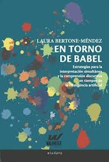
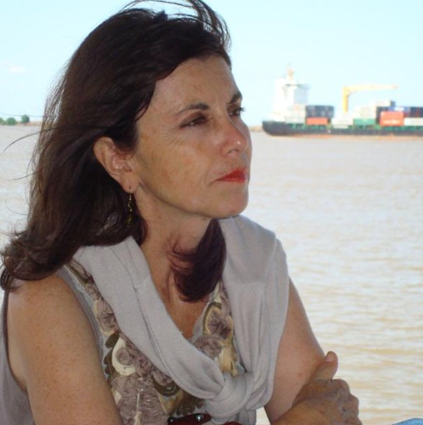

Poco tiempo después de haber escrito la reseña de la primera edición del libro de Laura Bertone, presentado inicialmente en 1989, me enteré de que en el 2024 salió una versión actualizada de aquel texto pionero en el área de la interpretación simultánea. Conseguí un ejemplar de esta actualización, que ahora agrega a su título la infaltable referencia a este fenómeno nuevo e impactante, tan innovador como disruptivo y controversial: el tema de la inteligencia artificial.
Precisamente en este punto nos centraremos en esta reseña, dado que el núcleo teórico del trabajo de Bertone permanece casi intacto, sustentado en un recorrido amplio y diverso que comienza con su tesis doctoral obtenida en la Universidad de París en 1983, y se desarrolla a lo largo de una carrera sumamente productiva y apasionante que —según sus palabras—fue “haciendo camino al andar”. Ese trayecto profesional incluyó lo intuitivo, que, en ocasiones se tornó demasiado ambicioso; una actitud científica, que la llevó a adoptar métodos de observación, asociación, comparación, y, sobre todo, un cuestionamiento sistemático y constante; originalidad y audacia para encarar su investigación; lo lúdico, reflejado en la incorporación de la creatividad y los recursos provenientes de sus clases de teatro; y, siempre, la estimulación permanente de la práctica real de la interpretación de conferencias en diferentes tipos de entornos y situaciones.
Laura parte del tema de la comprensión como factor imprescindible para explicar cuestiones humanas y tecnológicas en la evolución de su práctica. Recuerda que la interpretación simultánea nació y se desarrolló en el siglo XX para facilitar la comunicación internacional en el marco de las Naciones Unidas tras la Primera Guerra Mundial, y que previo a ello, la interpretación había sido consecutiva, con lápiz y papel en mano para ayudar a recordar lo dicho con exactitud.
La memoria, la atención y la predictibilidad parecen estar asociadas a la comprensión. Para lograrla, se requiere escuchar, mirar, sentir, asociar, comparar, conectar y ser capaz de sintetizar.
Ante la dificultad de un mecanismo tan complejo y sofisticado, Bertone, en marzo de 2024, y ya con la presencia imparable de la inteligencia artificial sobrevolando el horizonte, decide preguntarle a ChatGPT de qué manera comprenden los humanos, las computadoras y la propia IA. A lo que este sistema responde: los humanos comprenden integrando la razón, las emociones, el cuerpo, la memoria y la intuición, a partir de la experiencia vivida y del sentido que atribuyen al mundo. La comprensión humana es subjetiva, situada y profundamente relacional. Por otro lado, las computadoras y la IA, no comprenden en ese sentido: procesan información mediante algoritmos, detectan patrones en grandes volúmenes de datos y generan respuestas probabilísticas sin conciencia, emociones ni experiencia propia, aunque pueden simular comprensión con notable eficacia.
Resulta evidente que ya no es posible detener la irrupción arrolladora de esta tecnología, pero la autora reflexiona a partir de la respuesta obtenida. Nos dice, será necesario afinar las capacidades lingüísticas y comunicativas para formular preguntas cada vez más apropiadas y precisas. A mayor adelanto tecnológico, se requerirá mayor refinamiento intelectual y comunicativo por parte de los humanos. Su sugerencia se ha convertido, hacia fines de 2025, casi en un dogma.
De la misma manera, propone dirigir la atención al propio desarrollo y evolución personal, lo que refleja una mente abierta y receptiva al cambio, al considerar que pertenece a una generación que comenzó su labor interpretativa exclusivamente con lápiz y papel, mucho antes de la vertiginosa evolución de las tecnologías digitales actuales. Sin embargo, a pesar de que reconoce que el crecimiento exponencial de estas tecnologías y sus constantes avances nos dejan perplejos por su vertiginosidad y su sorprendente caducidad — al ser rápidamente reemplazadas por modelos cada vez más perfeccionados—, cualquier opinión al respecto tiende a volverse inválida precozmente.
Del papel y lápiz de sus inicios, pasó a un pequeño adelanto tecnológico, que fue fundamental para su profesión: un grabador de cinta doble que permitía grabar dos discursos a la vez, y con solo mover una palanquita podía pasar del orador al intérprete y viceversa cuantas veces quisiera para comparar las dos versiones y controlar la exactitud de la interpretación. Ya a mediados de los años 70 existía la traducción automática para ciertos textos con formatos normalizados, repetitivos y técnicos, cuyos conceptos estaban previamente bien definidos de manera unívoca, siempre con supervisión humana posterior. Sin embargo, estos sistemas frecuentemente producían desfasajes de sentido que provocaban las risas de traductores e intérpretes.
En 1988, Bertone, volvió a demostrar su actitud abierta y receptiva al escribir: “Construir una máquina que pueda interpretar discursos automáticamente implica entender en profundidad ciertos funcionamientos del cerebro para poder imitarlos. Es un desafío que habrá que enfrentar”. No se resistió, siguió investigando en profundidad el funcionamiento de los procesos cognitivos, perceptivos y de razonamiento. ¿No es esto precisamente lo que los sistemas de redes neuronales intentan imitar actualmente?
Tal vez, yo soy más negativa y reaccionaria que Laura Bertone, quien no cree que las nuevas tecnologías superinteligentes lleguen a reemplazar por completo a los traductores e intérpretes humanos. Sin embargo, hay cuestiones de intereses económicos y costos que a los traductores, en muchos casos, nos están convirtiendo en poseditores, mientras que la traducción automática cada vez más perfeccionada, realiza el trabajo de base.
En cuanto a la interpretación simultánea realizada por un robot, lo que antes era una creación de la imaginación es hoy una realidad. Vale la pena leer el ejemplo que ofrece la autora sobre la versión creada por la IA del discurso del presidente argentino Javier Milei en Davos en enero de 2024.
Es muy interesante la distinción que ella establece entre la traducción escrita y la oral. El texto escrito queda congelado; en cambio, lo contrario ocurre en la interpretación oral, donde todo está expuesto a la irrupción de lo novedoso en cualquier momento: el hablante siempre tendrá la posibilidad de inventar algo nuevo. Queda espacio interior para la imaginación y para la capacidad de asociar cosas nuevas a experiencias pasadas.
Bertone señala que la precisión de estas “soluciones de traducción hablada automática impulsadas por IA” depende de la calidad de los datos utilizados para entrenarlas, validarlas y evaluarlas. Quizás la interpretación se salve porque el desempeño de estos robots sigue siendo deficiente frente a lo novedoso o lo espontáneamente creativo. Es cierto que estas máquinas sufren “alucinaciones” causantes de desvaríos de sentido y cortocircuitos en la comunicación; sin embargo, cada vez están más perfeccionadas y ajustadas.
Para concluir, luego de una detallada y muy interesante descripción histórica del recorrido de las computadoras y la IA hasta nuestros días, llegamos a la pregunta que plantea la autora: ¿qué queda de nosotros como hombres y mujeres, como seres humanos, en el planeta Tierra en el siglo XXI? Su respuesta es que permanece lo más íntimo y lo esencial: el mundo interior, la intuición, el Silencio — así con s mayúscula — del interior humano sagrado. El mundo actual no se caracteriza precisamente por sus virtudes: guerras en curso y amenazas de otras por venir, dictadores que se imponen como dueños absolutos de los destinos humanos, una terrible pandemia que lo paralizó y una humanidad, que en consecuencia, no supo capitalizar las lecciones que dejó, prejuicios, grietas sociales y políticas, discriminación, odio al diferente en tantos casos, derechos violentados y usurpados. La IA vino para quedarse, y solo el tiempo dirá de qué manera y cómo impactará en nuestras vidas.
La autora invoca la presencia de Dios y cita al físico cuántico Basarab Nicolescu (1988) para hablar del futuro en este tema: “Después de haber explorado lo infinitamente pequeño y lo infinitamente grande, el hombre se encuentra confrontado a la infinita complejidad del encuentro consigo mismo”. Hermosa reflexión.
¿Cómo seguirá la historia? Esperemos que estas nuevas tecnología fortalezcan lo humano en lugar de sustituirlo. Como sugiere la afamada intérprete Laura Bertone-Méndez, abrir nuestras mentes a las mejores posibilidades es la forma de enfrentar los desafíos sin desesperanza y preservar aquello que nos hace verdaderamente humanos.
Sobre la autora

María Victoria Illas es Traductora Pública de Inglés egresada de la Universidad Católica Argentina. Docente en la UNLa de las materias Traducción Técnica II y III desde el año 2009 hasta el 2023. En la actualidad, ya retirada del aula, es tutora y correctora del Programa de Prácticas Preprofesionales y tutora/ evaluadora de trabajos finales y editora de la revista de la carrera “En otras palabras/In other words”. Traductora free-lance especializada en Medicina y Farmacología. Traductora y correctora de inglés de la Revista Argentina de Microbiología editada por la Asociación Argentina de Microbiología. Traductora y correctora de estilo de trabajos de investigación médicos. En continua capacitación académica. Amante de la literatura desde siempre y de tantas otras cosas, entre ellas, su profesión, la danza, el arte, la música, los viajes, los libros, el cine y el teatro.